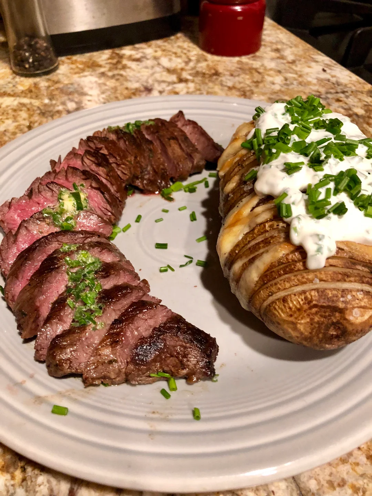

Steak and Hasselback Potatos
1 serving
Ingredients
- Potato
- Butter
- Olive oil
- Salt
- Steak
- Black-pepper
- Montreal-steak seasoning
Directions
- Preheat oven to 425 degrees
- Wash and dry your potato
- Put your potato on a cutting board and place two chopsticks, skewers, or butter knifes on each long side of the potato
- Cut the potato crosswise into slice with your desired size (I suggest 1/8-1/16 of an ich slices)
- In a microwave-safe bowl, melt the butter in the microwave until the butter is melted
- Add olive oil and salt into the butter bowl
- Brush this mixture on your sliced potato, focus on getting this mixture inbetween every slice
- Put the potato on a baking sheet and put it in the oven
- Cook the potato for 1 hour and 20 minutes, every 20 minutes reapplying this butter mixture on the potato
- In the last 20 minutes of the potato cooking, put a pan on the stove top and turn on the burner to medium high heat
- Put your steak on a cutting board and apply salt, black-pepper, and montreal-steak seasoning on both sides
- When the pan is hot, place the steak on the pan for whatever time is needed to cook your steak to the desired wellness
- Once steak is done, take it off the pan and put it back on the cutting board to cool for 5 minutes
- Serve & Enjoy!